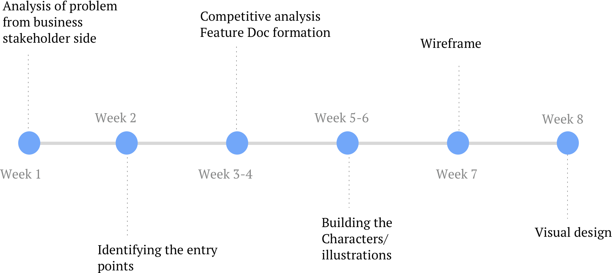

Description
1mg is a online medical e-commerce startup based in Gurgaon. I spent my Summer vacations as an intern at 1mg. This project was one of the major projects that I did there. The idea behind this Landing page was to spread awareness among customer that we provide online health consultancy feature. The doctor chat feature was just launched and the entry points for a new user were not clearly defined. Starting from the landing page we figured out the main entry points to the online doctor chat.
Timeline(4 weeks)

Need of redesigning the Landing page in Doctor Section
We observed that the intent of this feature was not clear to most of the users which resulted in low user retention rates. Most of the users didn’t know about this feature.
Secondly, user gets confused after opening our current landing Page as it is visually cluttered and the features were not properly defined which was incongruous with the user’s mental model . This could be solved by redesigning the user experience of the landing page.
Currently, there is chat screen which automatically opens up on clicking doctors tab which actually confusing for the first time. So, we decided to direct the user on a different page where he is first informed about the product and then given the options to interact with the product.
A good landing page is easy to use and increases the percentage of conversion. Which would be beneficial for both business and customer.The landing page must encompass all these points:
- It clearly defines the entry points for user and direct them to target page.
-
Give a clear explanation of what product is and how it will be useful to them.
-
The design and elements gives a clear sign about the value proposition that company can provide including the edge features. Basic communication of product must be delivered like USPs, How it works, what is the product for.
It is user centric and provide a clear idea about what kind of audience will come to this page.
-
It builds user trust by showing valuable information such as testimonials, FAQs and contact details.
-
It is also used for sale tactics by showing various offers that company provide seasonally.
Competitive Analysis
A competitive analysis shows that how our competitors are tackling the same situation. We searched through the landing page of our competitors and jotted down the following features:
When we arrived at the stage of developing the decided features the main problem was to design the hero section/opening screen of landing page. As a result of competitive analysis it was clear that home page is the actual region to build trust in users. We worked on this issue and tried to find the major factors which build trust.
We highlighted the points of trust which could be shown on the Hero section of our landing page to attract maxmium users. Later on we realised that we can play on terms on our USPs for which the product is made for.
The major points we focus on are Anywhere and anything. Our doctors aren’t available 24x7 because of which we decided not to mention our weak points. Still you can ask the question anytime and response will be made after the doctor has seen. If paid consultation is going on, they will respond in 5 to 10 mins of working hours if its free it may take a day also. We worked on our points anywhere and anything.
-
Anything : We tried to represent the graphic by characters so that users can better connect with our feature. To better describe anything we focussed on the consultation sections we provide and tried to club them in according to the user base we focus.
After analysis of the whole process we made the group for which a specific character will represent the category. The groups were made keeping in mind coverage of gender, age and the problems people hesitate to ask.
-
Anywhere : To show anywhere we use a familar chat screen and a phone which is accesible anywhere to our user. Also we tried to place the character in their home or office so that they visualize a familiar background.
As our team wanted to cope up with changing design tactics we started buiding an entirely new UI, hence we needed a new theme for our graphics. I started with the new brand guidelines and tried to engage the same color pallete with these characters. Also the theme was a little towards fluidity but maintaing the basic shapes. Following is the process by which I tried to create relatable characters. I tried to maintain the uniformity by using similar shapes in each character. Some of the specific features are discussed below :
The colors and fonts are chosen according to new branding of the company. The landing page is live
https://www.1mg.com/online-doctor-consultation
On summarising my design process I came across these steps which taught me how an e-commerce product works, what are its shortcomings and needs. My learnings:
-
A good Landing page is not only defined by its visuals but a strategical method is needed to influence our users.
-
Firstly, they try to engage the customer by providing different incentives (like here they provide free chat for 3 days) and once the user is engaged with their sevices they’ll generate profit through conversion.
-
How a B2C product works keeping in mind the business constraints.
-
The hero section is the most important part of landing page and must define a base through which user can connect and want to go further.
-
Also the information you show on landing page should be a stepwise process such that it doesn’t confuse your user base and works in coherence with User’s mental model.
-
A product is a continuous iterative process which needs user data and minimizing their efforts.